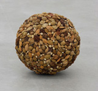
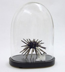
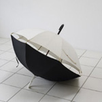
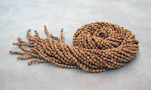

|
Francesco Carone, artista tra i più interessanti nel panorama della giovane arte italiana, nasce a Siena nel 1975, città dove vive e lavora. Si è formato all’Istituto d’Arte della cittadina toscana e all’Accademia delle Belle Arti di Firenze. Le sue opere sono entrate a far parte di collezioni private e pubbliche, tra le quali la Collezione Farnesina del Ministero degli Esteri. Tra la esposizioni recenti si segnala la mostra personale Horror Vacui all’EX3, Centro per l’arte contemporanea di Firenze a cura di Lorenzo Giusti e Arabella Natalini. La sua arte riflette i temi della trasformazione e della circolarità dei processi creativi. La sua ricerca parte da una rilettura personale dell'universo che lo circonda (universo composito, fatto di oggetti, segni e affezioni), attraverso il quale egli realizza opere che si coagulano attorno a un tema o a un pensiero dominante - spesso legato alla storia e alla pratica dell’arte – dove l’aspetto evocativo risulta sostanziale.

- ALCUNE SUE OPERE -






 |
Era il 9 giugno 1311 quando la Maestà, dipinta da Duccio di Buoninsegna, con una processione solenne fu portata e collocata sull'altare maggiore del Duomo. Siena, settecento anni dopo, con il Palio che si correrà il 16 agosto, ricorda questo momento e il grande concittadino che la dipinse. La pala rappresenta, infatti, il capolavoro di Duccio, così come rappresenterà un capolavoro la vincita di una delle Contrade che prenderanno parte alla Festa senese.
Un impegno particolare, dunque, quello che ha visto il giovane artista senese, Francesco Carone, realizzare il drappellone per questa Carriera.
Nessun confronto, chiaramente, tra stili e mani, separati da secoli di storia, ma, sicuramente, un punto di contatto: il desiderio e la volontà di innovare e sperimentare con percorsi creativi.
Il suo è un Palio che deve essere guardato e non solo visto.
Contradaiolo del Leocorno e artista molto apprezzato, a soli 36 anni è già conosciuto a livello nazionale. Una promessa nel panorama dell'arte contemporanea, lui che non si definisce né pittore, né scultore, ma che riesce a creare emozioni giocando con la creatività. Sì perché le sue opere dopo aver "dato il la" ascoltano, in una melodia di risposte, le percezioni, le immaginazioni e i ricordi che riescono a scatenare in coloro che le guardano. Questo è quello che accade a chi si trova davanti a questo Palio non dipinto, dove domina, incontrastato, il colore naturale della seta. Un bianco avorio che ben si adatta a molteplici interpretazioni. Fede, purezza, sacralità. Sul drappo Carone ha riproposto, attraverso l'abile ricamo di Letizia Frosini, la Madonna di Duccio. L'aureola è stata appositamente tessuta con ordito di seta e trama in crine di cavallo, dalla Fondazione Lisio per l'Arte della Seta di Firenze e, successivamente, impreziosita con perle.
Sul collo della Vergine una collana di barberi, dipinti, ciascuno, da alcuni contradaioli scelti dai Priori delle 17 Consorelle; al dito della mano un anello in argento, con incastonata una balzana - il simbolo della città di Siena - realizzata in ebano e osso.
Il drappellone, impreziosito da cristalli di Swarovski, non solo riporta la stessa scritta della
pala di Duccio, ma anche la frase, e questa volta in braille e con una vezzosa aggiunta, Madre Santa di Dio sii pace per Siena, sii per Duccio e Francesco la vita, che ti hanno fatta così.
"L'idea è il contenuto", dice Carone. Vero. Francesco Carone è riuscito, come del resto in tutta la sua produzione, a sovvertire la definizione delle cose con un < >. Ha creato un Palio incredibilmente emozionante. Un'opera che ti fa venire i brividi, tanta è la scarica di sentimenti in grado di trasmettere. Parla di senesità, parla di storia, parla di arte, parla di passione, ma, soprattutto, racconta l'amore di una città per la sua Festa. Il
crine di cavallo, usato al posto di pennellate di colore, per inserire l'elemento principe della Carriera rappresenta, indubbiamente, un'inventiva artistica, e la sua collocazione nell'aureola, per gli eredi della senesità di Duccio non necessita spiegazioni.
Guardare il Palio di Carone è come assistere ad una lezione magistrale di estetica. Induce ad una conoscenza sensibile. Non serve il colore per cogliere il significato di un'opera d'arte né, tantomeno, il tratto di un pennello per caricare di simbologia una concettualità capace di intellettualizzare una serie di caratteri, che si trasformano in codici; alternativi sì, ma ugualmente, e forse più, in grado di narrare le origini di appartenenza. Il drappo di seta, nonostante l'intervento dell'artista che con abilità ha giocato tra uno "spazio di origine" e uno di "vissuto", rimane al tempo stesso immacolato e carico di significazioni. Un simulacro del sé: Duccio, Siena, il Palio, e di un altro sé; quello di chi potrà conquistarlo vincendolo, e quello di tutti coloro che lo hanno desiderato. Non a caso, infatti, le Contrade dei barberi sono 17 e non solo le 10 che corrono, come da tradizione, che si possono vedere sul retro, completamente nero, della stoffa. E non a caso gli occhi della Madonna sono senza iride. Non è necessario vedere per sentire. Le marche semiologiche comunicano con maggiore forza. Il Drappellone di Carone è difficile da descrivere, perché, riportando Massimo Carboni: "mai la parola aderirà all'immagine, parlare non è vedere e scrivere non è mostrare".
I senesi, se interpellati, tutti, all'unisono, dicono che a loro basta un pezzo di stoffa bianco. Bene. Francesco Carone ha risposto alla loro richiesta, ma con qualcosa in più. Ha aggiunto l'arte, quella con la A maiuscola.
|


|